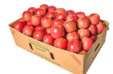

<!DOCTYPE html>
<html lang="en">
<head>
<meta charset="UTF-8">
<meta name="viewport" content="width=device-width,initial-scale=1">
<title>Exercise 1.7 — Numbers</title>
<meta name="description" content="Class 8 Mathematics · Numbers · Exercise 1.7">
<link rel="icon" href="data:image/svg+xml,<svg xmlns='http://www.w3.org/2000/svg' viewBox='0 0 100 100'><text y='.9em' font-size='90'>📘</text></svg>">
<link rel="stylesheet" href="../../../assets/book.css">
<link rel="stylesheet" href="https://cdn.jsdelivr.net/npm/katex@0.16.11/dist/katex.min.css" crossorigin="anonymous">
</head>
<body>
<header class="topbar">
<div class="topbar-in">
  <div class="crumb">
    <span class="c1"><a href="../../../index.html">Library</a> · <a href="../../index.html">Class 8 Mathematics</a></span>
    <span class="c2">Numbers · Exercise 1.7</span>
  </div>
  <a class="tb-btn" data-nav="prev" href="../../01-numbers/15-exercise-1.6/index.html" title="Exercise 1.6">←</a>
  <details class="drawer"><summary class="tb-btn" title="Sections in this chapter">☰</summary>
<div class="drawer-panel"><div class="dh">Numbers</div><a href="../01-chapter-opener/index.html">Chapter opener; 1.1 Introduction</a><a href="../02-rational-numbers-1.2/index.html">1.2 Rational Numbers</a><a href="../03-exercise-1.1/index.html">Exercise 1.1</a><a href="../04-basic-arithmetic-operations-on-rational-numbers-1.3/index.html">1.3 Basic Arithmetic Operations on Rational Numbers</a><a href="../05-word-problems-on-the-basic-operations-1.4/index.html">1.4 Word Problems on the basic operations</a><a href="../06-exercise-1.2/index.html">Exercise 1.2</a><a href="../07-properties-of-rational-numbers-1.5/index.html">1.5 Properties of Rational Numbers</a><a href="../08-exercise-1.3/index.html">Exercise 1.3</a><a href="../09-introduction-to-square-numbers-1.6/index.html">1.6 Introduction to Square Numbers</a><a href="../10-square-root-1.7/index.html">1.7 Square Root</a><a href="../11-exercise-1.4/index.html">Exercise 1.4</a><a href="../12-cubes-and-cube-roots-1.8/index.html">1.8 Cubes and Cube Roots</a><a href="../13-exercise-1.5/index.html">Exercise 1.5</a><a href="../14-exponents-and-powers-1.9/index.html">1.9 Exponents and Powers</a><a href="../15-exercise-1.6/index.html">Exercise 1.6</a><a href="../16-exercise-1.7/index.html" aria-current="page">Exercise 1.7</a><a href="../17-summary/index.html">SUMMARY</a></div></details>
  <a class="tb-btn" data-nav="next" href="../../01-numbers/17-summary/index.html" title="SUMMARY">→</a>
  <button class="tb-btn" data-theme-toggle title="Toggle light / dark" aria-label="Toggle light or dark theme">◐</button>
</div>
<div class="progress"><span style="width:14.8%"></span></div>
</header>
<main class="wrap">
<div class="sec-head">
  <p class="eyebrow"><a href="../index.html">Chapter 1 · Numbers</a></p>
  <h1>Exercise 1.7</h1>
  <p class="sec-meta">Textbook pages 46–47 · 1 figure</p>
</div>
<article class="prose">
<p>Miscellaneous Practice Problems Miscellaneous Practice Problems</p>
<figure class="fig side-fig"></figure>
<ul class="qlist">
<li><span class="mk">1.</span><span class="lt">If \(\frac{3}{4}\) of a box of apples weighs 3 kg and 225 gm, how much does</span></li>
</ul>
<p>a full box of apples weigh?</p>
<ul class="qlist">
<li><span class="mk">2.</span><span class="lt">Mangalam buys a water jug of capacity \(3 \frac{4}{5}\) litre. If she buys another jug which is 2 2</span></li>
</ul>
<p>times as large as the smaller jug, how many litre can the larger one hold?</p>
<ul class="qlist">
<li><span class="mk">3.</span><span class="lt">Ravi multiplied \(\frac{25}{8}\) and \(\frac{16}{15}\) and he says that the simplest form of this product is \(\frac{10}{3}\)</span></li>
</ul>
<p>and Chandru says the answer in the simplest form is Are they both correct? Explain. \(3 \frac{1}{3}\) . Who is correct? (or)</p>
<ul class="qlist">
<li><span class="mk">4.</span><span class="lt">Find the length of a room whose area is \(\frac{153}{10}\) sq.m and whose breadth is 2 1120 m.</span></li>
<li><span class="mk">5.</span><span class="lt">There is a large square portrait of a leader that covers an area of \(4489 cm^{2}\). If each</span></li>
</ul>
<p>side has a 2 cm liner, what would be its area?</p>
<ul class="qlist">
<li><span class="mk">6.</span><span class="lt">A greeting card has an area 90 cm . Between what two whole numbers is the length</span></li>
</ul>
<p>of its side?</p>
<ul class="qlist">
<li><span class="mk">7.</span><span class="lt">225 square shaped mosaic tiles, each of area 1 square decimetre exactly cover a square</span></li>
</ul>
<p>shaped verandah. How long is each side of the square shaped verandah?</p>
<ul class="qlist">
<li><span class="mk">8.</span><span class="lt">If 1906624´ \(x =3100\), find x.</span></li>
</ul>
<div class="mathblock"><p>m-1 m+1</p></div>
<ul class="qlist">
<li><span class="mk">9.</span><span class="lt">If \(2 +2 =640\), then find m.</span></li>
<li><span class="mk">10.</span><span class="lt">Give the answer in scientific notation:</span></li>
</ul>
<p>A human heart beats at an average of 80 beats per minute. How many times does it beat in i) an hour? ii) a day? iii) a year? iv) 100 years?</p>
<p>Challenging ProblemsChallenging Problems</p>
<ul class="qlist">
<li><span class="mk">11.</span><span class="lt">In a map, if 1 inch refers to 120 km, then find the distance between two cities B and</span></li>
</ul>
<p>C which are B and C. \(4 \frac{1}{6}\) inches and 313 inches from the city A which lies between the cities</p>
<ul class="qlist">
<li><span class="mk">12.</span><span class="lt">Give an example and verify each of the following statements.</span></li>
<li><span class="mk">(i)</span><span class="lt">The collection of all non-zero rational numbers is closed under division.</span></li>
<li><span class="mk">(ii)</span><span class="lt">Subtraction is not commutative for rational numbers.</span></li>
<li><span class="mk">(iii)</span><span class="lt">Division is not associative for rational numbers.</span></li>
<li><span class="mk">(iv)</span><span class="lt">Distributive property of multiplication over subtraction is true for rational</span></li>
</ul>
<p>numbers. That is, a(b - c) = ab - ac.</p>
<ul class="qlist">
<li><span class="mk">(v)</span><span class="lt">The mean of two rational numbers is rational and lies between them.</span></li>
<li><span class="mk">13.</span><span class="lt">If \(\frac{1}{4}\) of a ragi adai weighs 120 grams, what will be the weight of \(\frac{2}{3}\) of the same</span></li>
</ul>
<p>ragi adai?</p>
<ul class="qlist">
<li><span class="mk">14.</span><span class="lt">If \(p + 2q =18\) and pq \(= 40\) , find \(\frac{21}{pq} +\) .</span></li>
<li><span class="mk">15.</span><span class="lt">Find x if \(5 5x \times 3 34 = 21\).</span></li>
</ul>
<div class="mathblock"><p>\(\frac{1}{10}\)</p></div>
<ul class="qlist">
<li><span class="mk">16.</span><span class="lt">By how much does \(\frac{1}{10} _{11}\) exceed \(\frac{}{11}\) ?</span></li>
<li><span class="mk">17.</span><span class="lt">A group of 1536 cadets wanted to have a parade forming a square design. Is it possible?</span></li>
</ul>
<p>If it is not possible, how many more cadets would be required?</p>
<ul class="qlist">
<li><span class="mk">18.</span><span class="lt">Evaluate: 286225 and use it to compute 2862 25. \(+ 28 6225\).</span></li>
<li><span class="mk">19.</span><span class="lt">Simplify: \((3.769 \times 10\) ) \(+ (4.21 \times 10\) )</span></li>
</ul>
<ul class="qlist">
<li><span class="mk">20.</span><span class="lt">Order the following from the least to the greatest: 16 , 8 , 3 , 4 , 2</span></li>
</ul>
</article>
<nav class="pager"><a class="" data-nav="prev" href="../../01-numbers/15-exercise-1.6/index.html"><span class="dir">← Previous</span><span class="t">Exercise 1.6</span><span class="ch">Numbers</span></a><a class="nx" data-nav="next" href="../../01-numbers/17-summary/index.html"><span class="dir">Next →</span><span class="t">SUMMARY</span><span class="ch">Numbers</span></a></nav>
</main><footer class="site">Generated from the source textbook PDFs · text, figures and exercises belong to their respective publishers.</footer><script defer src="https://cdn.jsdelivr.net/npm/katex@0.16.11/dist/katex.min.js" crossorigin="anonymous"></script>
<script defer src="https://cdn.jsdelivr.net/npm/katex@0.16.11/dist/contrib/auto-render.min.js" crossorigin="anonymous"
  onload="renderMathInElement(document.body,{delimiters:[
    {left:'\\(',right:'\\)',display:false},
    {left:'$$',right:'$$',display:true},
    {left:'\\[',right:'\\]',display:true}],throwOnError:false,ignoredTags:['script','noscript','style','textarea','pre','code']})"></script>
<script src="../../../assets/book.js"></script>
<script defer src="../../../../assets/search.js?v=1789782769"></script>
<script defer src="../../../../assets/screenshot.js?v=2"></script>
</body>
</html>
